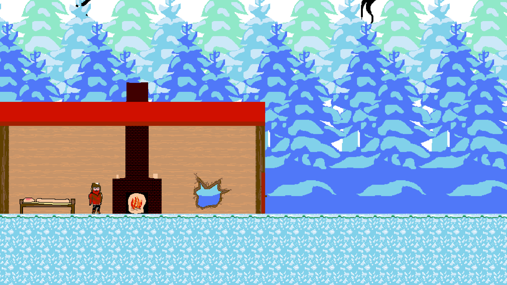

Shelter
Shelter was done during the GlobalGameJam2019, where we decide to do a 2D platformer. We hit a lot of obstacles as it was our first Game Jam but we got something which is playable. In Shelter you control a man who finds himself in the woods during winter and needs to find/repair his shelter. So he adventures out to find items like a torch to keep himself warm.